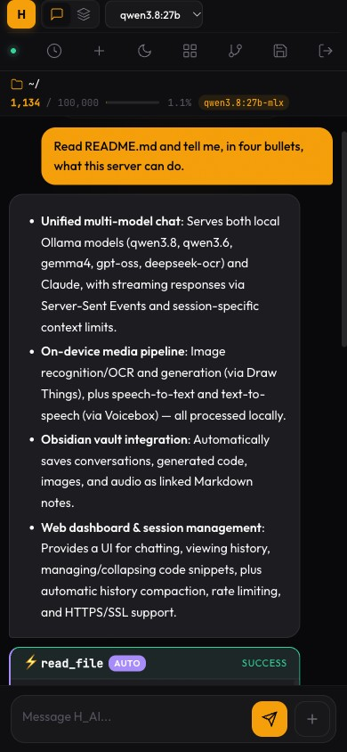
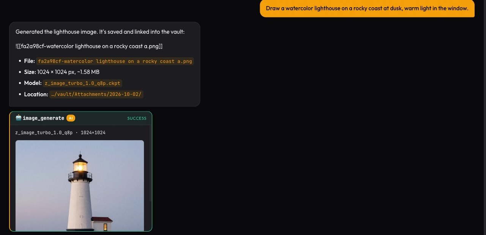
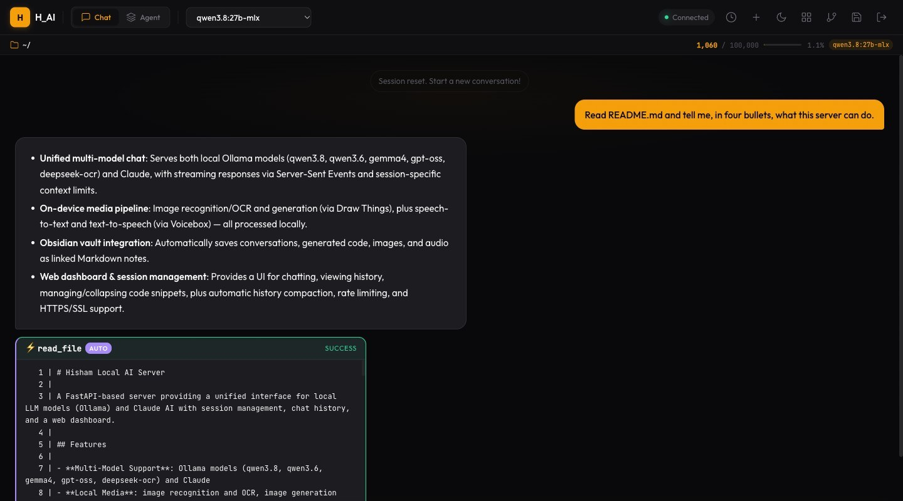
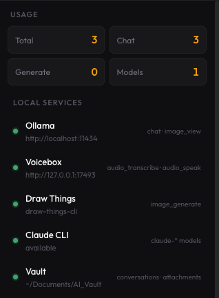

I got tired of depending on cloud APIs for everything. The latency, the cost, the privacy concerns — I wanted my own AI that runs locally, responds instantly, and stays completely private. So I built one. A personal AI engine running on my Mac Studio M4 Max, accessible from any device in my house through a custom web interface I call H_AI.
The goal is now written down at the top of the project’s to-do list: a local AI assistant, for one person, good enough to replace the external AI tools I currently pay for and send my data to. Every change is measured against that sentence.
The Hardware
Mac Studio M4 Max
The M4 Max with 64 GB of unified memory is a sweet spot for running local LLMs. The GPU and CPU share the same memory pool — no copying data between RAM and VRAM — so models that would need a 24 GB+ graphics card on a PC just run natively here. Ollama handles model loading and inference, and its MLX builds are tuned specifically for Apple Silicon.
The Models
The line-up has changed almost completely since February. The current set is newer, bigger, and has far longer memory:
| Model | Context Window | Best For |
|---|---|---|
| Claude Sonnet | ~150,000 words | Default for hard questions — with an automatic local fallback |
| Qwen 3.8 27B (MLX) | ~100,000 words | Main local model, vision, the fallback when Claude is unavailable |
| Qwen 3.6 35B-A3B | ~100,000 words | Mixture-of-experts — large model, small per-token cost |
| Gemma 4 26B / 31B | ~100,000 words | General reasoning and writing |
| Gemma 4 (small) | ~50,000 words | Quick everyday questions |
| gpt-oss 20B | ~6,000 words | Short, focused tasks |
| DeepSeek-OCR | — | Reading text out of images and scans |
I can still switch models mid-conversation from the header. What’s new is that the default is Claude, reached through the Claude Code CLI, and the server checks it before every turn. If the CLI is missing, logged out or rate-limited, the turn quietly moves to Qwen 3.8 — but never silently: the chat shows a notice with Claude’s own error, because a hidden downgrade would just read as Claude answering badly. Claude is a convenience, not a pillar; the real work is closing the gap until the local models don’t need it.
The Web Interface
The heart of the project is still the webapp: FastAPI on the back end, vanilla HTML/CSS/JS on the front, served over HTTPS to my laptop, phone and tablet. In March it got a full redesign, and in September a phone pass: the input box went from 48% of a phone’s width to 64%, and every button now meets the touch-target minimum.

Beyond Text: Seeing, Drawing, Listening
The biggest change this year is that H_AI stopped being text-only — without anything leaving the house.
Images. Generation runs through Draw Things’ command-line tool, with three models for three jobs: a fast “turbo” model for drafts, a higher-quality one when it matters, and an editing model that modifies an existing picture. Generated images show up inline in the chat and land in the vault.

Vision and OCR. Qwen 3.8 can look at a pasted photo or screenshot; DeepSeek-OCR reads text out of scans. You can generate an image and then ask the vision model to describe it — a round trip I use as a smoke test (“a single blue marble” came back as “a glossy blue stone sphere”).
Voice. Speech-to-text and text-to-speech go through Voicebox, running locally — the same setup I wrote about in Generating Voice from Text Using Local Models. Voice input was the first item on my “what’s next” list in February. It’s done.
A Memory That Stays Home
Every conversation is now written to an Obsidian vault as a Markdown note: the exchange, any code it produced, and links to the images and audio it made. Conversations can branch, and the branch keeps a link back to its parent, so the vault reads as a graph of how my thinking went, not just a pile of logs.
More importantly, the assistant can search that vault. “What did we decide about the database?” or “Search my notes for the gold price” runs a search over my own notes and answers from what’s there. This is the one capability no external tool can match, because the notes only exist on this machine. And when nothing matches, it says so — before this was wired up, asking a local model about my notes made it cheerfully invent one called “Gold Price History.”
The Skills System
The AI isn’t just a chatbot — it can take actions. There are now 30 skills: reading and writing files, searching code, git, fetching web pages, web search, calculations, generating images and speech, moving between projects, and searching the vault.
The model asks for a tool by writing a short fenced block. The server runs it, and then — this was the big fix of the summer — hands the result back to the model and has it answer from that evidence. Before, the model would call a web search and then answer from memory anyway; now answers are grounded in what the tool actually returned.
Read-only tools run immediately. Anything that changes something — writing a file, committing, playing audio out loud — shows a confirmation card first. Once approved, the tool runs and the model answers from its output, the same way it does for automatic tools.

Failures That Look Like Success
The most useful lesson of the year wasn’t a feature. It was a pattern, and it’s now written at the top of the project plan:
The symptom was almost always the same: a blank answer bubble that finished cleanly, as if the model had simply had nothing to say. Behind it were very different causes:
“What is 2+2?” answered nothing. The calculator’s pattern matched a single space, so it computed an empty expression, failed — and the server counted the tool as having handled the question, so the model was never asked.
A typo in a model name streamed nothing. Ollama replies with a “model not found” error, but the HTTP client doesn’t raise on it, so the stream just… ended. Now the error is shown in the bubble.
Gemma kept going quiet. This one was disputed for weeks: I could reproduce it four times in nine, my QA agent couldn’t at all. The answer turned out to be that Gemma 4 is a thinking model — it was generating the whole time, just into a hidden reasoning field, leaving the visible answer empty. QA’s test question (“Paris”) simply didn’t make it think. Turning thinking off took it from four blanks in nine to zero in six.
Every one of these was fixed by making the failure say what it is — an error in the bubble, a notice in the chat — not only by making it rarer.
A Team That Reviews the Code
In September I gave the project a standing team of AI agents in Claude Code, each with one job: a CEO who holds the goal and decides what’s worth doing, a QA lead who reproduces every claim end to end before anything is called done, a security reviewer, and owners for the dashboard, the models, tool calling, local media, the vault, and operations.
Their first security review found a real chain: text from a fetched web page could reach the page as HTML, which could then drive the tools — a path from a malicious page to running commands on my Mac. It was closed within the day. Later reviews turned up dozens of quieter bugs, including a feature whose conversation history had never worked because an error was silently swallowed. The rule that came out of it: every finding is reproduced before it’s fixed, and nothing is self-certified.
Security
H_AI is LAN-only by design — a deliberate choice, revisited when there’s a reason to reach further. Inside that boundary:
Access: HTTPS everywhere with a self-signed certificate, API keys compared as hashes in constant time, bcrypt-hashed dashboard passwords, and rate limits on both the API and the login page. Images and audio use short-lived signed links instead of exposing the key. The dashboard page no longer carries the API key at all — the browser authenticates with its login session instead, and only from the server’s own pages.
Untrusted content: anything that comes from outside — a web page, an uploaded document, an old note — is fenced as data before it reaches the model, with a random marker the content can’t forge. A PDF that says “ignore all previous instructions” gets reported, not obeyed. Web fetches can’t be pointed back at the services running on the Mac itself.
Actions: anything that changes the system needs a confirmation, and the experimental agent mode — which can run model-written shell commands — is switched off unless I turn it on.
The Architecture
The stack is still intentionally simple:
Backend: FastAPI with async streaming and Pydantic validation. No database — sessions and logs are JSON files on disk, and long-lived memory is the Markdown vault.
Frontend: Vanilla HTML, CSS, and JavaScript, with Marked.js and Highlight.js. No React, no build step. It’s a PWA, so it installs to the home screen.
AI and media runtimes: Ollama for local models, the Claude Code CLI for Claude, Draw Things for images, Voicebox for speech. Each is a separate local service; if one is down, only its features stop, and a services panel shows which.

What’s Next
Voice is done. So are images, vision, and long-term memory. What remains:
Closing the gap with Claude — making the local models good enough at tool use that the cloud default becomes optional. Claude is still noticeably better at deciding when to reach for a tool. Remote access, probably through an overlay network like Tailscale, once there’s a reason for it — the prerequisites are written down, and taking the API key out of the page was one of them. And more of the same work that turned out to matter most: finding the places where it fails quietly, and making them speak up.
No subscription for the local models. No data leaving my network unless I pick the cloud model. Just my own hardware, good software, and complete ownership.